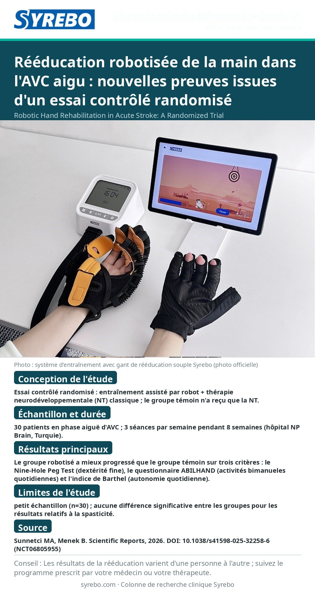

Numéro 01 · Version image
Rééducation robotisée de la main dans l'AVC aigu : nouvelles preuves issues d'un essai contrôlé randomisé

Source : Sunnetci MA, Menek B. Effects of robotic hand-assisted rehabilitation on motor function and daily living activities in acute stroke: a randomized controlled trial. Scientific Reports, 2026. DOI:
10.1038/s41598-025-32258-6 (ClinicalTrials.gov:
NCT06805955).
Limites de l'étude : Petit échantillon (n=30) ; aucune différence significative entre les groupes pour les résultats relatifs à la spasticité.
Rappel amical : les résultats de la rééducation varient d'une personne à l'autre ; veuillez établir votre programme d'entraînement sous la supervision d'un médecin ou d'un thérapeute.
Lire la version chinoiseRead in English